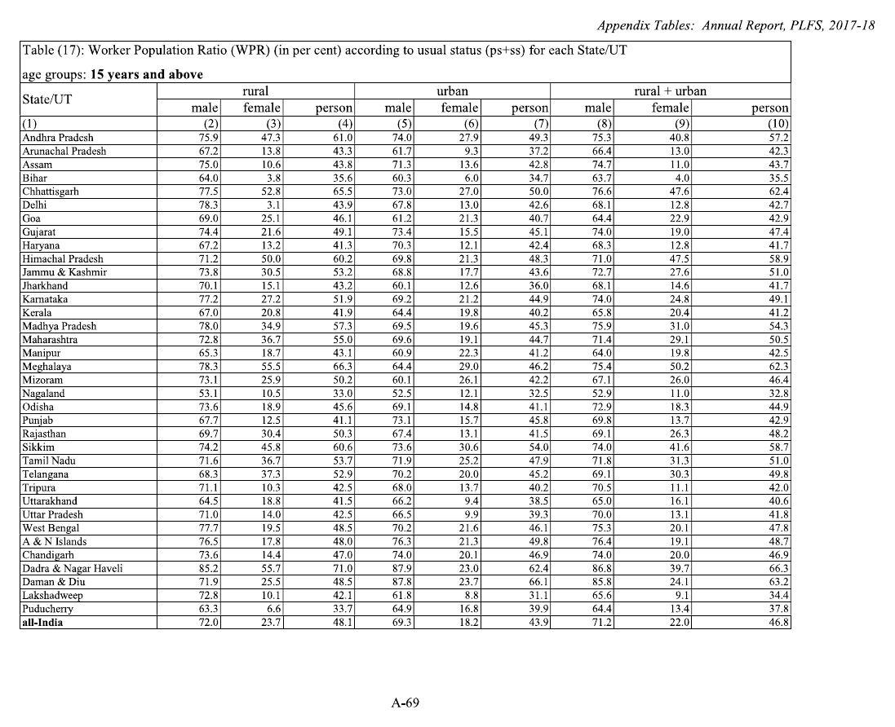
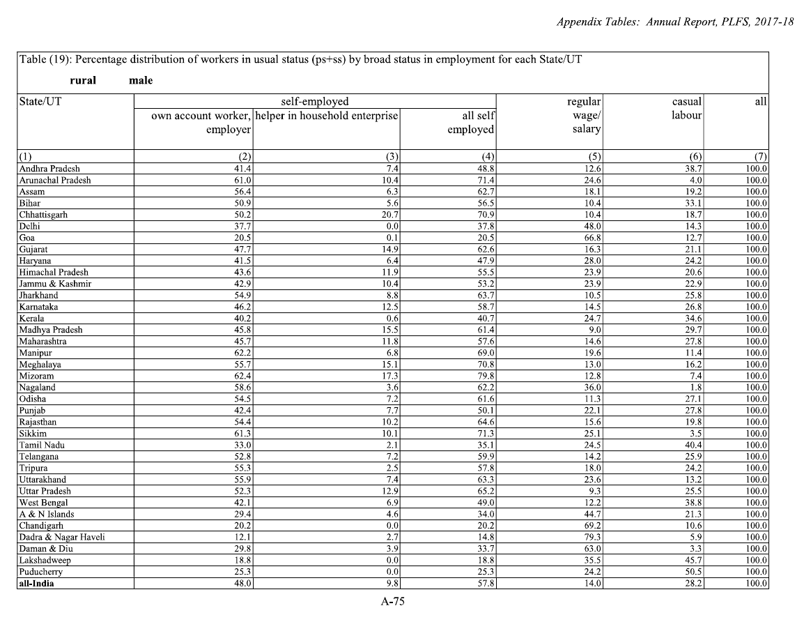
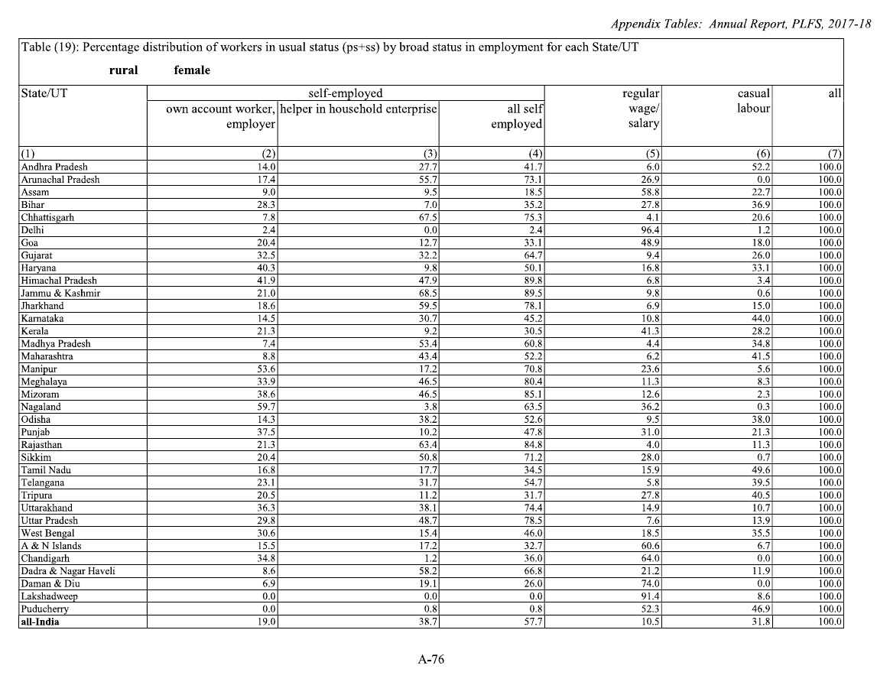
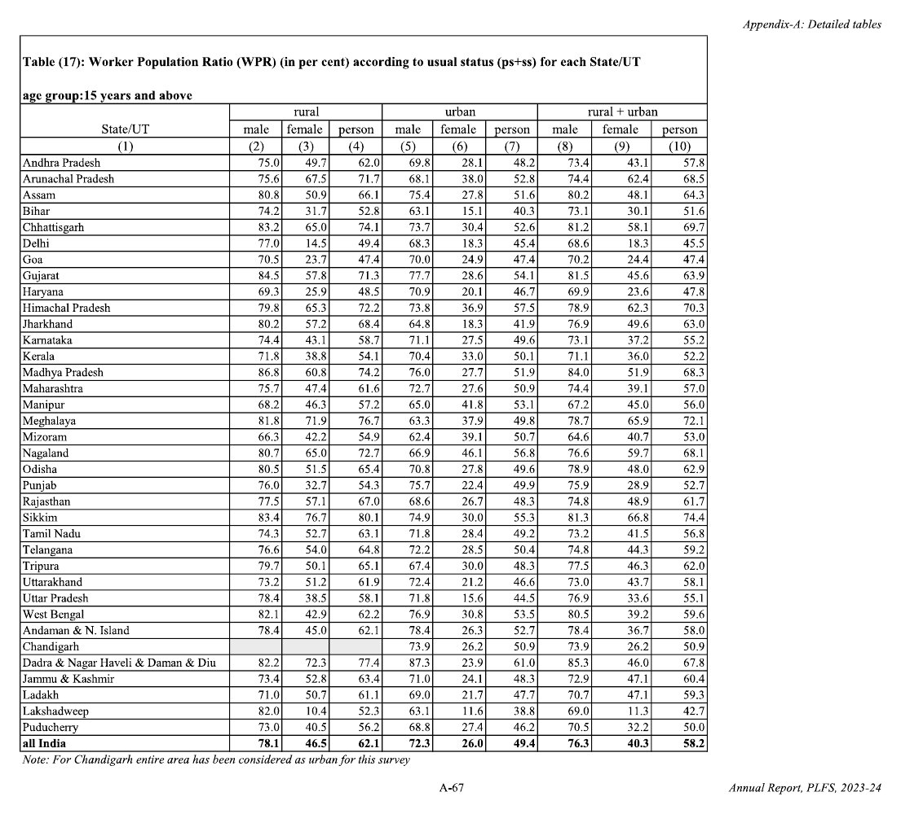
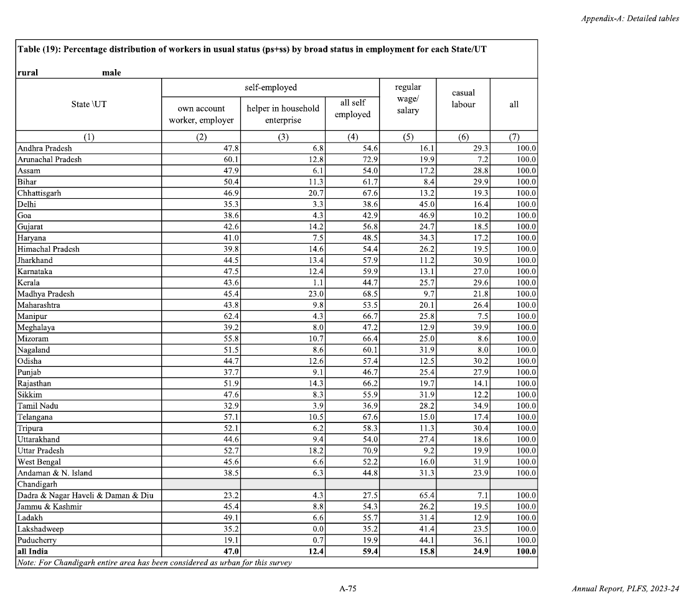
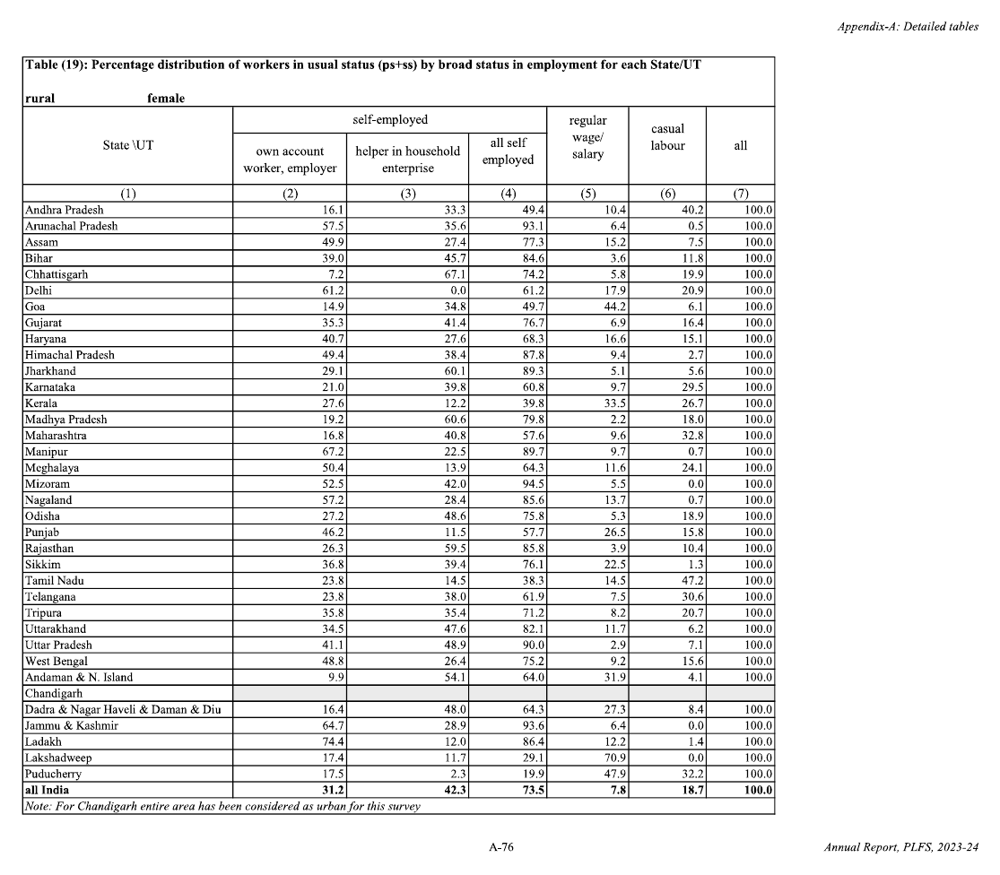

Analysis
India’s Rising Female Workforce: What Do the Numbers Really Tell Us?
An analysis of PLFS data from 2017–18 to 2023–24, examining the rise in rural women’s employment, changing patterns of work and what headline figures leave out.
Introduction
In 2024, the Periodic Labour Force Survey (PLFS) reported that women’s labour force participation in India had risen from 23.3% in 2017–18 to 41.7% in 2023–24. In just six years, the figure had nearly doubled. While this suggested a considerable increase in women’s participation in the workforce, I was curious about what the numbers looked like beyond the headline. Were more women actually working? And if so, what kind of work were they doing?
I also wanted to see where the largest increases had occurred and whether the trends differed across states. So I turned to the detailed state-level tables in the PLFS annual reports for 2017–18 and 2023–24. These offered a useful basis for comparison, with 2017–18 marking the survey’s first year and 2023–24 being the last full year before changes to the survey in 2025 made direct comparisons with earlier rounds difficult.
Original data
Everything in this analysis comes from two tables in the appendix of each annual report: Table 17, which gives the worker population ratio for each state, and Table 19, which gives the kinds of work people do. The pages are reproduced below as they appear in the reports, turned to read the right way up. The cleaned workbook that the analysis is built on follows them.
Relevant pages from the 2017–18 annual report3 pages

Table 17, worker population ratio
Table 19, rural male
Table 19, rural female


Relevant pages from the 2023–24 annual report3 pages

Table 17, worker population ratio
Table 19, rural male
Table 19, rural female


Cleaned workbook and state-by-state figuresExcel
Loading the table from the workbook.
What the data shows
1Half of the rise is unpaid family work, and almost none of it is a salaried job
Between 2017–18 and 2023–24, the number of rural women in work rose by 22.8 for every 100 women. That rise came from four kinds of work:
| Kind of work | Increase per 100 rural women | Share of the rise |
|---|---|---|
| Unpaid help in a family farm or business | 10.5 | 46% |
| Working on her own account, mostly farming or running something small | 10.0 | 44% |
| Daily-wage labour | 1.2 | 5% |
| Salaried job | 1.1 | 5% |
| All rural women in work | 22.8 | 100% |
Source: PLFS annual reports 2017–18 and 2023–24, Tables 17 and 19 (rural female); author’s calculations. Shares may not add to exactly 100 because of rounding.
So nine in ten of the women counted in this rise are self-employed, and close to half are working without pay. Only about one in ten is in paid work, and only one in twenty has a salaried job.
2Changes in employment shares can be misleading
Among rural women who work, the proportion working as unpaid family helpers rose only slightly, from 38.7% to 42.3%. On that figure alone, little seems to have changed. But counted against all rural women, unpaid helpers rose from 9.2 to 19.7 in every 100 (their number more than doubled).
Salaried work shows the opposite. Its share of working women fell from 10.5% to 7.8%, which looks like a decline. Yet the number of salaried women rose, from 2.5 to 3.6 in every 100 rural women.
Thus, when the whole group doubles, a share can stay flat while the numbers inside it double too.
| Kind of work | Share of working women (%) | Per 100 rural women | ||
|---|---|---|---|---|
| 2017–18 | 2023–24 | 2017–18 | 2023–24 | |
| Unpaid help in a family farm or business | 38.7 | 42.3 | 9.2 | 19.7 |
| Salaried job | 10.5 | 7.8 | 2.5 | 3.6 |
Source: PLFS annual reports 2017–18 and 2023–24, Tables 17 and 19 (rural female); author’s calculations.
3States with the lowest initial employment rates saw some of the largest increases
Among the 21 larger states, those where few women were counted as working in 2017–18 generally saw the biggest rises. Clearest examples below:
- Bihar: from 3.8 to 31.7 women working in every 100
- Assam: from 10.6 to 50.9
- Jharkhand: from 15.1 to 57.2
Source: PLFS annual reports 2017–18 and 2023–24, Table 17 (rural female). The full list of states is in the workbook above.
One could wonder how much of the recorded growth reflects changes in women’s employment versus in the reporting of work. It could be that agricultural and household-enterprise work undertaken by women was more fully captured in later survey rounds. Bihar’s reading supports this argument as despite its substantial increase in female employment, regular salaried work increased by just 0.1 women per 100. Much of the growth was concentrated in self-employment, particularly unpaid family work.
Sources
- Ministry of Statistics and Programme Implementation, Press note on the PLFS Annual Report, July 2023 to June 2024 (23 September 2024). Source of the labour force participation figures of 23.3% and 41.7%.
- National Statistical Office, Annual Report, Periodic Labour Force Survey, July 2017 to June 2018 (May 2019). Tables 17 and 19 of Appendix A. Hosted by the Directorate General of Employment.
- National Statistical Office, Annual Report, Periodic Labour Force Survey, July 2023 to June 2024. Tables 17 and 19 of Appendix A.
- National Statistical Office, Changes in the Periodic Labour Force Survey from 2025 (May 2025). Source for the change in sample design that affects comparison with earlier rounds.
- National Statistical Office, Fact Sheet on Time Use Survey, January to December 2024 (February 2025).